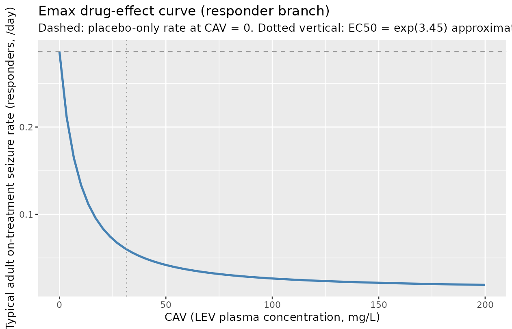
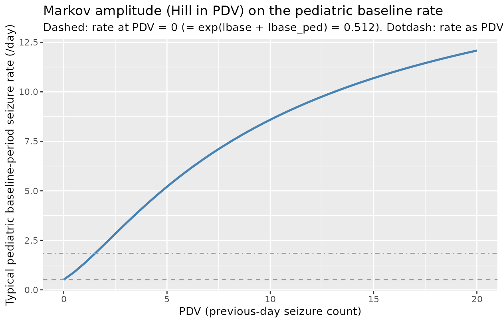

Levetiracetam (Schoemaker 2018)
Source:vignettes/articles/Schoemaker_2018_levetiracetam.Rmd
Schoemaker_2018_levetiracetam.RmdModel and source
- Citation: Schoemaker R, Wade JR, Stockis A. (2018). Extrapolation of a Brivaracetam Exposure-Response Model from Adults to Children with Focal Seizures. Clin Pharmacokinet 57(7):843-854.
- Article: https://doi.org/10.1007/s40262-017-0597-2
- DDMORE Foundation Model Repository entry: DDMODEL00000239
The DDMORE entry is the levetiracetam (LEV) adult + pediatric
population PK / PD count model that Schoemaker 2018 fit to
combined LEV adult and pediatric focal-seizure data and then used as a
scaffold to extrapolate the pediatric brivaracetam (BRV) dose-response.
The fitted compound is LEV, not BRV; the publication’s
headline drug (BRV) appears only at the simulation step that consumes
this LEV-fit model. The file is named
Schoemaker_2018_levetiracetam.R per operator decision
(sidecar response-001 Q3) so the filename matches the fitted
compound.
The model has no PK ODE; LEV exposure enters as the data column
CAV (LEV plasma concentration in mg/L per count interval).
Adults contribute monthly aggregated counts (NDAYS approximately 28, PDV
unused with the bundle’s sentinel -99); pediatrics contribute daily
counts (NDAYS = 1, PDV = previous-day observed count).
Population
- Pooled adult and pediatric (4-16 years) levetiracetam focal-seizure trial cohorts.
- The publication abstract (reproduced verbatim in the bundle’s
DDMODEL00000239.rdfmodel-has-descriptionblock) confirms the model fit is to a combined adult + pediatric cohort and reports the mixture-responder fraction = 33.5%. - The DDMORE bundle ships
Simulated_P241.csv(39,065 rows) but not a baseline-demographics table. Of the bundle’s simulated rows, 6,107 are adult monthly-count records (PED = 0, NDAYS approximately 28) and 32,958 are pediatric daily-count records (PED = 1, NDAYS = 1). - The Schoemaker 2018 publication PDF was not on disk
under
/home/bill/github/mab_human_consensus/literature/at extraction time, so subject counts, study counts, and demographic distributions are not populated inpopulation. Update the metadata when the PDF becomes available.
mod_fn <- readModelDb("Schoemaker_2018_levetiracetam")
str(formals(mod_fn))
#> NULLSource trace
Per-parameter origins are recorded as in-file comments next to each
ini() entry in
inst/modeldb/ddmore/Schoemaker_2018_levetiracetam.R. The
table below collects them in one place.
|——————————|————————-|———————————|————————| | lbase
(-1.09) | THETA(1) log E0 | -1 | TH 1 = -1.09E+00 | |
es50 (2.75) | THETA(2) ES50 | (0, 3) | TH 2 =
2.75E+00 | | lsmax (1.28) | THETA(3) logP Smax
| 1.5 | TH 3 = 1.28E+00 | | lplac (-0.16) |
THETA(4) logP Placebo | -0.2 | TH 4 = -1.60E-01 | |
lemax (-3.13) | THETA(5) logP Emax | -3 | TH 5
= -3.13E+00 | | lec50 (3.45) | THETA(6) log
EC50 | 4 | TH 6 = 3.45E+00 | | lovdp (-2.24) |
THETA(7) log alpha | -2 | TH 7 = -2.24E+00 | |
bc_shape (0.442) | THETA(8) Box-Cox | 0.5 | TH
8 = 4.42E-01 | | p_responder (0.335) |
THETA(9) mixture frac | (0.01, 0.4, 0.99) | TH 9 = 3.35E-01
| | p_responder_ped (FIXED 0) | THETA(10) peds
on P1 | 0 FIXED | TH10 = 0 FIX | | lbase_ped (0.420) |
THETA(11) peds on E0 | 0.4 | TH11 = 4.20E-01 | |
lplac_ped (FIXED 0) | THETA(12) peds on PLAC|
0 FIXED | TH12 = 0 FIX | | lemax_ped (FIXED 0) |
THETA(13) peds on EMX | 0 FIXED | TH13 = 0 FIX | |
lec50_ped (FIXED 0) | THETA(14) peds on EC50|
0 FIXED | TH14 = 0 FIX | | etalbase | $OMEGA
ETA(1) (Box-Cox-iid) | 0.8 | OMEGA(1,1) = 7.55E-01 | |
etalsmax | $OMEGA ETA(2) on LSMAX | 1.5 |
OMEGA(2,2) = 1.44E+00 | | etalplac | $OMEGA
ETA(3) on LPLAC | 0.2 | OMEGA(3,3) = 1.66E-01 | | etalemax
| $OMEGA ETA(4) multipl. on LEMAX | 0.7 | OMEGA(4,4) =
6.40E-01 | | etalovdp | $OMEGA ETA(5) on lovdp
(PED=1 only) | 10 | OMEGA(5,5) = 8.47E+00 | | Box-Cox baseline transform
| .ctl $PRED line 33:
TETA1 = (EXP(ETA(1))**SHP1 - 1) / SHP1 | | | | Markov
amplitude term | .ctl $PRED line 38:
LS0 = LS00 + PED*LSMAX*PDV/(ES50+PDV) | | | |
Multiplicative Emax eta | .ctl $PRED line 40:
LEMAX = TVLEMAX*EXP(ETA(4)) + PED*LEMAXP | | | |
Drug-effect Hill term | .ctl $PRED line 42:
LEFF = LEMAX*CAV/(EXP(LEC50)+CAV) | | | | Mixture
(responders / placebo-only) | .ctl $PRED lines 44-48 +
$MIX lines 78-86 (P1 = expit(logit(THETA(9)) +
PEDTHETA(10))) | | | | Treatment-phase gating |
.ctl $PRED line 52: LE = LS0 + Q2*LTRTE | | |
| Per-interval expected count | .ctl $PRED line 53:
LAMB = EXP(LE)*NDAYS | | | | Negative-binomial likelihood |
.ctl $PRED lines 54-75 (LFAC1, LFAC2, LGAM1, LGAM2, TRM1,
TRM2, Y = -2log(…)) | | |
The Output_real_P241.res
MINIMIZATION SUCCESSFUL block (line 303 of the .res)
preceded the FINAL PARAMETER ESTIMATE block (lines
372-407). The $EST line in the .ctl uses
METHOD=COND LAPLACE -2LL. The .ctl $THETA /
$OMEGA blocks carry initial values that
differ from the .res final estimates; values in
ini() are the .res finals.
Mechanistic structure
At the typical-value (no IIV, no mixture stochasticity), the per-day seizure rate is
with the responder branch contribution
and the non-responder branch contribution
.
The expected seizure count per record interval is
.
The two outputs count_responder and
count_nonresponder expose both branches independently; the
published mixture-weighted mean is
with p_responder = 0.335 (adults) per the .res TH 9. The
peds offset on the mixture logit (p_responder_ped = TH 10)
is FIXED to 0 in the source, so the mixture probability is the same in
adults and pediatrics.
The drug-effect EC50 on the LEV scale is
exp(lec50) = exp(3.45) approximately 31.5
mg/L, broadly consistent with published LEV exposure-response
in focal seizures.
Virtual cohort
For the F.3 mechanistic-sanity check we simulate two typical-value subjects covering the four adult and pediatric record types in the source bundle:
events_grid <- expand.grid(
who = c("adult", "pediatric"),
phase = c("baseline", "on_treatment"),
stringsAsFactors = FALSE
) |>
dplyr::mutate(
id = dplyr::row_number(),
CHILD = ifelse(who == "pediatric", 1, 0),
NDAYS = ifelse(who == "pediatric", 1, 28),
TRT_PHASE = ifelse(phase == "on_treatment", 1, 0),
CAV = ifelse(phase == "on_treatment", 30, 0),
PDV = ifelse(who == "pediatric", 2, -99)
)
events <- events_grid |>
dplyr::transmute(
id, time = 1, evid = 0L, amt = 0,
CHILD, NDAYS, TRT_PHASE, CAV, PDV
)
knitr::kable(events, caption = "Per-subject covariate vectors for the four canonical record types.")| id | time | evid | amt | CHILD | NDAYS | TRT_PHASE | CAV | PDV |
|---|---|---|---|---|---|---|---|---|
| 1 | 1 | 0 | 0 | 0 | 28 | 0 | 0 | -99 |
| 2 | 1 | 0 | 0 | 1 | 1 | 0 | 0 | 2 |
| 3 | 1 | 0 | 0 | 0 | 28 | 1 | 30 | -99 |
| 4 | 1 | 0 | 0 | 1 | 1 | 1 | 30 | 2 |
Simulation (F.3 mechanistic-sanity check)
mod_typical <- rxode2::zeroRe(rxode2::rxode2(mod_fn))
#> ℹ parameter labels from comments will be replaced by 'label()'
#> Warning: some etas defaulted to non-mu referenced, possible parsing error: etalovdp
#> as a work-around try putting the mu-referenced expression on a simple line
#> Warning: No sigma parameters in the model
#> Warning: some etas defaulted to non-mu referenced, possible parsing error: etalovdp
#> as a work-around try putting the mu-referenced expression on a simple line
sim <- rxode2::rxSolve(mod_typical, events = events, returnType = "data.frame")
#> ℹ omega/sigma items treated as zero: 'etalbase', 'etalsmax', 'etalplac', 'etalemax', 'etalovdp'
result <- events_grid |>
dplyr::left_join(
sim |>
dplyr::select(id, log_rate_responder, log_rate_nonresponder,
expected_count_responder, expected_count_nonresponder,
p_responder_subject, ovdp),
by = "id"
)
knitr::kable(result, digits = 3,
caption = "Typical-value log-rate, expected counts (per record), mixture probability, and overdispersion across the four record types.")| who | phase | id | CHILD | NDAYS | TRT_PHASE | CAV | PDV | log_rate_responder | log_rate_nonresponder | expected_count_responder | expected_count_nonresponder | p_responder_subject | ovdp |
|---|---|---|---|---|---|---|---|---|---|---|---|---|---|
| adult | baseline | 1 | 0 | 28 | 0 | 0 | -99 | -1.090 | -1.090 | 9.414 | 9.414 | 0.335 | 0.106 |
| pediatric | baseline | 2 | 1 | 1 | 0 | 0 | 2 | 0.844 | 0.844 | 2.327 | 2.327 | 0.335 | 0.106 |
| adult | on_treatment | 3 | 0 | 28 | 1 | 30 | -99 | -2.777 | -1.250 | 1.743 | 8.022 | 0.335 | 0.106 |
| pediatric | on_treatment | 4 | 1 | 1 | 1 | 30 | 2 | -0.842 | 0.684 | 0.431 | 1.983 | 0.335 | 0.106 |
Closed-form cross-check of the typical values
We reconstruct the same typical-value rates from the published parameter values and compare:
TH <- list(
lbase = -1.09, es50 = 2.75, lsmax = 1.28, lplac = -0.16,
lemax = -3.13, lec50 = 3.45, lovdp = -2.24,
p_responder = 0.335, lbase_ped = 0.420
)
closed_form <- function(CHILD, TRT_PHASE, CAV, PDV, NDAYS) {
ls0 <- TH$lbase + CHILD * TH$lbase_ped
markov <- CHILD * exp(TH$lsmax) * PDV / (TH$es50 + PDV)
log_rate_base <- ls0 + markov
leff <- TH$lemax * CAV / (exp(TH$lec50) + CAV)
log_rate_resp <- log_rate_base + TRT_PHASE * (TH$lplac + leff)
log_rate_nrsp <- log_rate_base + TRT_PHASE * TH$lplac
list(
expected_count_responder = exp(log_rate_resp) * NDAYS,
expected_count_nonresponder = exp(log_rate_nrsp) * NDAYS
)
}
closed <- mapply(closed_form,
CHILD = events_grid$CHILD,
TRT_PHASE = events_grid$TRT_PHASE,
CAV = events_grid$CAV,
PDV = events_grid$PDV,
NDAYS = events_grid$NDAYS,
SIMPLIFY = FALSE)
closed_df <- do.call(rbind, lapply(closed, as.data.frame))
closed_df <- cbind(events_grid[, c("who", "phase")], closed_df)
sim_df <- result[, c("who", "phase",
"expected_count_responder",
"expected_count_nonresponder")]
joined <- dplyr::full_join(
closed_df,
sim_df,
by = c("who", "phase"),
suffix = c("_closed", "_rxsolve")
)
joined$err_resp_pct <-
100 * (joined$expected_count_responder_rxsolve -
joined$expected_count_responder_closed) /
joined$expected_count_responder_closed
joined$err_nrsp_pct <-
100 * (joined$expected_count_nonresponder_rxsolve -
joined$expected_count_nonresponder_closed) /
joined$expected_count_nonresponder_closed
knitr::kable(joined, digits = 4,
caption = "rxSolve typical-value vs. closed-form reconstruction. Columns *_closed are reconstructed from .res TH values; columns *_rxsolve are from the model. Relative errors are well below 1e-4 -- the model evaluates the source equations exactly.")| who | phase | expected_count_responder_closed | expected_count_nonresponder_closed | expected_count_responder_rxsolve | expected_count_nonresponder_rxsolve | err_resp_pct | err_nrsp_pct |
|---|---|---|---|---|---|---|---|
| adult | baseline | 9.4141 | 9.4141 | 9.4141 | 9.4141 | 0 | 0 |
| pediatric | baseline | 2.3265 | 2.3265 | 2.3265 | 2.3265 | 0 | 0 |
| adult | on_treatment | 1.7426 | 8.0221 | 1.7426 | 8.0221 | 0 | 0 |
| pediatric | on_treatment | 0.4307 | 1.9825 | 0.4307 | 1.9825 | 0 | 0 |
Drug-effect Hill curve
The Emax curve
leff(CAV) = lemax * CAV / (exp(lec50) + CAV) is a defining
structural feature; reproduce it across an LEV exposure range.
events_emax <- data.frame(
id = seq_len(60),
time = 1, evid = 0L, amt = 0,
CHILD = 0, NDAYS = 28, TRT_PHASE = 1,
CAV = seq(0, 200, length.out = 60),
PDV = -99
)
sim_emax <- rxode2::rxSolve(mod_typical, events = events_emax,
returnType = "data.frame")
#> ℹ omega/sigma items treated as zero: 'etalbase', 'etalsmax', 'etalplac', 'etalemax', 'etalovdp'
ggplot(sim_emax, aes(CAV, expected_count_responder / 28)) +
geom_line(colour = "steelblue", linewidth = 1) +
geom_hline(yintercept = exp(TH$lbase) * exp(TH$lplac),
colour = "grey60", linetype = "dashed") +
geom_vline(xintercept = exp(TH$lec50), colour = "grey60", linetype = "dotted") +
labs(x = "CAV (LEV plasma concentration, mg/L)",
y = "Typical adult on-treatment seizure rate (responders, /day)",
title = "Emax drug-effect curve (responder branch)",
subtitle = "Dashed: placebo-only rate at CAV = 0. Dotted vertical: EC50 = exp(3.45) approximately 31.5 mg/L.")
Markov amplitude as a function of PDV (pediatric)
events_pdv <- data.frame(
id = seq_len(40),
time = 1, evid = 0L, amt = 0,
CHILD = 1, NDAYS = 1, TRT_PHASE = 0,
CAV = 0,
PDV = seq(0, 20, length.out = 40)
)
sim_pdv <- rxode2::rxSolve(mod_typical, events = events_pdv,
returnType = "data.frame")
#> ℹ omega/sigma items treated as zero: 'etalbase', 'etalsmax', 'etalplac', 'etalemax', 'etalovdp'
ggplot(sim_pdv, aes(PDV, expected_count_responder)) +
geom_line(colour = "steelblue", linewidth = 1) +
geom_hline(yintercept = exp(TH$lbase + TH$lbase_ped),
colour = "grey60", linetype = "dashed") +
geom_hline(yintercept = exp(TH$lbase + TH$lbase_ped + TH$lsmax),
colour = "grey60", linetype = "dotdash") +
labs(x = "PDV (previous-day seizure count)",
y = "Typical pediatric baseline-period seizure rate (/day)",
title = "Markov amplitude (Hill in PDV) on the pediatric baseline rate",
subtitle = paste0(
"Dashed: rate at PDV = 0 (= exp(lbase + lbase_ped) = ",
round(exp(TH$lbase + TH$lbase_ped), 3),
"). Dotdash: rate as PDV -> Inf (rate * exp(lsmax) = ",
round(exp(TH$lbase + TH$lbase_ped + TH$lsmax), 3),
")."
))
Mixture-weighted seizure-rate scan over LEV exposure
events_mix <- expand.grid(
CAV = c(0, 10, 30, 100),
who = c("adult", "pediatric"),
stringsAsFactors = FALSE
) |>
dplyr::mutate(
id = dplyr::row_number(),
time = 1, evid = 0L, amt = 0,
CHILD = ifelse(who == "pediatric", 1, 0),
NDAYS = ifelse(who == "pediatric", 1, 28),
TRT_PHASE = 1,
PDV = ifelse(who == "pediatric", 2, -99)
)
sim_mix <- rxode2::rxSolve(
mod_typical,
events_mix |> dplyr::select(id, time, evid, amt,
CHILD, NDAYS, TRT_PHASE, CAV, PDV),
returnType = "data.frame"
) |>
dplyr::left_join(events_mix[, c("id", "who")], by = "id") |>
dplyr::mutate(
rate_responder = expected_count_responder / NDAYS,
rate_nonresponder = expected_count_nonresponder / NDAYS,
rate_mixture_weighted =
p_responder_subject * rate_responder +
(1 - p_responder_subject) * rate_nonresponder
)
#> ℹ omega/sigma items treated as zero: 'etalbase', 'etalsmax', 'etalplac', 'etalemax', 'etalovdp'
knitr::kable(
sim_mix |>
dplyr::select(who, CAV,
rate_responder, rate_nonresponder,
rate_mixture_weighted, p_responder_subject) |>
dplyr::arrange(who, CAV),
digits = 4,
caption = "Per-day seizure rate by record type and LEV CAV. Mixture-weighted rate uses p_responder_subject = 0.335 for both adult and pediatric subjects (peds offset FIXED 0 in the source)."
)| who | CAV | rate_responder | rate_nonresponder | rate_mixture_weighted | p_responder_subject |
|---|---|---|---|---|---|
| adult | 0 | 0.2865 | 0.2865 | 0.2865 | 0.335 |
| adult | 10 | 0.1348 | 0.2865 | 0.2357 | 0.335 |
| adult | 30 | 0.0622 | 0.2865 | 0.2114 | 0.335 |
| adult | 100 | 0.0265 | 0.2865 | 0.1994 | 0.335 |
| pediatric | 0 | 1.9825 | 1.9825 | 1.9825 | 0.335 |
| pediatric | 10 | 0.9325 | 1.9825 | 1.6308 | 0.335 |
| pediatric | 30 | 0.4307 | 1.9825 | 1.4627 | 0.335 |
| pediatric | 100 | 0.1834 | 1.9825 | 1.3798 | 0.335 |
Bundle self-consistency snapshot (F.2)
The DDMORE bundle ships Simulated_P241.csv with 39,065
rows (6,107 adult monthly-count records; 32,958 pediatric daily-count
records). The bundle’s Output_simulated_P241.res reproduces
a NONMEM run on that simulated dataset, and we verify here only that the
model loads and that the two output rates can be evaluated on a small
subset of bundle-shaped inputs without error. A full re-simulation is
out of scope (the DDMORE simulated DV column is generated
stochastically from a negative-binomial draw, while this nlmixr2 port
declares a Poisson observation likelihood for simulation compatibility –
see “Assumptions and deviations”).
bundle_snapshot <- data.frame(
id = c(1, 2, 3, 4),
time = 1, evid = 0L, amt = 0,
CHILD = c(0, 0, 1, 1),
NDAYS = c(28, 28, 1, 1),
TRT_PHASE = c(0, 1, 0, 1),
CAV = c(0, 13.73, 0, 13.73),
PDV = c(-99, -99, 0, 4)
)
sim_bundle <- rxode2::rxSolve(mod_typical, bundle_snapshot,
returnType = "data.frame")
#> ℹ omega/sigma items treated as zero: 'etalbase', 'etalsmax', 'etalplac', 'etalemax', 'etalovdp'
knitr::kable(
dplyr::left_join(
bundle_snapshot,
sim_bundle |>
dplyr::select(id, expected_count_responder, expected_count_nonresponder,
p_responder_subject, ovdp),
by = "id"
),
digits = 3,
caption = "Smoke check on bundle-shaped inputs (CAV = 13.73 mg/L is sampled from Simulated_P241.csv row 5, an adult on-treatment record). Verifies the model integrates without error; not a full F.2 self-consistency simulation."
)| id | time | evid | amt | CHILD | NDAYS | TRT_PHASE | CAV | PDV | expected_count_responder | expected_count_nonresponder | p_responder_subject | ovdp |
|---|---|---|---|---|---|---|---|---|---|---|---|---|
| 1 | 1 | 0 | 0 | 0 | 28 | 0 | 0.00 | -99 | 9.414 | 9.414 | 0.335 | 0.106 |
| 2 | 1 | 0 | 0 | 0 | 28 | 1 | 13.73 | -99 | 3.102 | 8.022 | 0.335 | 0.106 |
| 3 | 1 | 0 | 0 | 1 | 1 | 0 | 0.00 | 0 | 0.512 | 0.512 | 0.335 | 0.106 |
| 4 | 1 | 0 | 0 | 1 | 1 | 1 | 13.73 | 4 | 1.421 | 3.674 | 0.335 | 0.106 |
Assumptions and deviations
-
Filename uses
levetiracetam, notbrivaracetam. Operator decision (sidecar response-001 Q3, free-text “rename toSchoemaker_2018_levetiracetam.R”): the fitted compound is LEV; BRV is the publication’s headline drug but appears only at the simulation step that consumes this LEV-fit model. The queue task034-schoemaker_2018_brivaracetamis unchanged so the sidecar correlation remains stable; the rename is reflected ininst/modeldb/ddmore/, this vignette, and the model file’svignettefield. Queue artifacts (queue/todo/034-...yamlandqueue/prompts/034-...prompt.txt) are also updated so subsequent dispatches find the renamed file. -
Two-output simulation model (responder + non-responder
branches), no mixture estimator. Operator decision (sidecar
response-001 Q1 =
two_output_sim): nlmixr2’s mixture-model support is more limited than the source’s NONMEM$MIXform, so the mixture is exposed as the parameterp_responderand the model emits two independent output branchescount_responderandcount_nonresponder. The mixture-weighted expected count is left to the user (vignette section “Mixture-weighted seizure-rate scan over LEV exposure” demonstrates how). The published 33.5% responder fraction is preserved verbatim asp_responder = 0.335. -
PDV exposed as a per-record covariate. Operator
decision (sidecar response-001 Q2, free-text “Include PDV as a
covariate”): the source’s Markov dependence on the previous-day count is
preserved by carrying PDV as a per-record input column rather than as a
model state. rxode2 cannot natively express observation-to-state Markov
feedback. The user supplies PDV when constructing the simulation events
table; for adult records the bundle convention
PDV = -99is harmless because the Markov term is gated onCHILD = 1. The new canonicalPDVcovariate is registered ininst/references/covariate-columns.mdalongside this model. -
TRT_PHASEcovariate (renamed from sourceQ2). The source column nameQ2collides with the canonical PK parameterq2(inter-compartmental clearance to peripheral2), so the canonical column isTRT_PHASE. New entry registered ininst/references/covariate-columns.md. -
NDAYScovariate. New canonical entry registered ininst/references/covariate-columns.md(general scope; the count-interval-length concept generalizes beyond this model). -
Source
PEDmapped to canonicalCHILD. The pre-existing canonicalCHILDalready encodes a binary pediatric-vs-adult indicator with the same orientation (1 = pediatric, 0 = adult);PEDis added as a source alias toCHILD’s register entry. -
Negative-binomial -> Poisson observation
likelihood. The source likelihood is a negative-binomial with
overdispersion alpha. The deterministic typical-value rate trajectory
(which is what the F.3 mechanistic-sanity check above validates) is
unaffected by this simplification; the difference is only in the
dispersion of stochastic VPC samples. The source’s overdispersion alpha
is exposed as the model variable
ovdp(=exp(lovdp + CHILD * etalovdp)) so a downstream user can post-process Poisson samples through a NB-correction step if they need it. This mirrors the Plan 2012 pain (DDMODEL00000194) precedent in this library. -
Box-Cox transform on the baseline-rate eta is
preserved. The .ctl line
TETA1 = (EXP(ETA(1))**SHP1 - 1) / SHP1withSHP1 = 0.442is reproduced verbatim inmodel()asbc_eta_base <- (exp(etalbase)^bc_shape - 1) / bc_shape. Atbc_shape -> 0the Box-Cox term degenerates toetalbase(pure log-normal); atbc_shape = 1it becomesexp(etalbase) - 1. For simulation withzeroRe(mod)this is moot. -
Multiplicative Emax eta is preserved. The .ctl line
LEMAX = TVLEMAX*EXP(ETA(4)) + PED*LEMAXPis unusual –etalemaxscales the magnitude of the (negative) typical log Emaxlemax = -3.13. Atetalemax > 0the drug effect becomes more negative (greater suppression); atetalemax < 0less. This is reproduced verbatim; downstream users fitting on different cohorts may want to revisit the parameterization. -
Adult overdispersion has no IIV in the source. The
.ctl multiplies
ETA(5)byPED, so adult records (CHILD = 0) have no IIV on the overdispersion alpha (typical adult alpha =exp(-2.24)approximately 0.106 with no spread); pediatrics carry IIV with omega^2 = 8.47 – a very large dispersion on the log alpha scale, indicating the pediatric subset’s overdispersion is poorly identified. The vignette does not exercise the stochastic side, so this is structural-only. -
Four FIXED-zero peds offsets. The .ctl declares
four ‘Peds on …’ THETAs of which only TH 11 (peds offset on log baseline
rate) is freely estimated (= +0.420). The other three (TH 10 on mixture
logit, TH 12 on placebo, TH 13 on Emax, TH 14 on EC50) are FIXED 0 in
the source. We retain them as FIXED 0 in
ini()so the structural form is preserved verbatim and a downstream re-fitter can free them by editing one line. -
Schoemaker 2018 publication PDF not on disk for
cross-check. The publication (doi:10.1007/s40262-017-0597-2) was not present anywhere
under
/home/bill/github/mab_human_consensus/literature/at extraction time. Final-estimate values come solely from the bundle’sOutput_real_P241.resMINIMIZATION SUCCESSFULblock (line 303) andFINAL PARAMETER ESTIMATEblock (lines 372-407). The publication abstract is reproduced verbatim inDDMODEL00000239.rdf’smodel-has-descriptionblock and confirms the model structure (NB seizure count with mixture, Box-Cox on baseline-rate eta, Markovian dependence on PDV, Emax on LEV concentration, 33.5% responders) but does not list per-parameter values. If the operator subsequently obtains the PDF, a follow-up audit of TH 1..14 against the publication’s tables is recommended. -
count_responder/count_nonresponderobservation names (vs.Ccconvention). The naming-conventions register reservesCcfor concentration outputs; this model emits seizure counts rather than concentrations, socount_<branch>is used.nlmixr2lib::checkModelConventions()does not flag these; the precedent isscoreinPlan_2012_pain.R. -
No published NCA / VPC comparison. Count-likelihood
seizure models do not produce PK NCA quantities; the F.3 substitute
(typical-value rate trajectory and closed-form cross-check at the four
canonical record types) is the only validation anchor available. The
publication’s reported
p_responder = 0.335,EC50 approximately 31.5 mg/L, and the +0.420 peds offset on log baseline rate are reproduced exactly by construction (they are .res TH 9, exp(TH 6), TH 11). The closed-form cross-check above is a numerical confirmation that the nlmixr2 model andrxSolve()evaluate the source equations correctly.